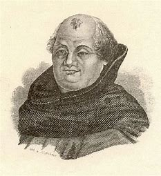
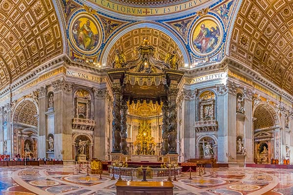

Johann Tetzel


Johann Tetzel
Johann Tetzel was een duitse aflatenhandelaar die werkte voor de katholieke
kerk. In 1503 begon Tetzel met de aflaathandel in opdracht van de paus. Hij
reisde in de late middeleeuwen dorpjes, steden en markten af om aflaten te
verkopen. De opbrengst van zijn handel ging naar de bouw van
Sint-pietersburg in Rome. Onder andere de Aflatenhandel was een van de
oorzaken van de reformatie.
De Aflatenhandel
Je kocht een aflaat om je zonden te vergeven en
je ziel te zuiveren, met een aflaat werd de tijd in het vagevuur verkort. Het
vagevuur is de plek waar je na je dood kwam. Johann Tetzel was aflaatprediker,
dat is iemand die de aflaten aanprijst. Maarten Luther was fel tegen de verkoop
van de aflaten, hierover schreef hij ook zijn 95 stellingen.
Eigenlijk is het dus een soort van 2-strijd tussen Johann Tetzel en Maarten
Luther geweest, Johann Tetzel die de aflaten juist aanprijst en Maarten Luther
die fel tegen de verkoop van de aflaten was.

De katholieke kerk
De Katholieke kerk had in de middeleeuwen veel macht
en invoed. Het hoofd van de Katholieke kerk is de paus. De paus is de leider van de
hele kaholieke kerk wereldwijd, en heeft dus veel macht. In tetzel's tijd was paus
Leo X aan de macht. Hij was veel geld nodig voor de bouw van de Sint-pietersburg in Rome.
Daarom bedachte Leo X het aflatensysteem om geld op te halen. Tetzel moest in opdracht
van paus Leo X en Aartbischop Albert van Brandenburg aflaten gaan verkopen om geld op te
halen voor de katholieke kerk. Zou werd dus het geld van de gewone burgers gebruikt voor
de wil van de Paus. Ook werd er door priesters van de katholieke kerk veel misbruik gemaakt
van hun macht. Luther ging met zijn stellingen tegen de katholieke kerk in. Hierdoor splitste
een deel van de Katholieke kerk zich af. Dit werd de protestante kerk.
Tetzel en de reformatie
In 1517 gaf de paus toestemming om aflaten te verkopen
in ruil voor een bijdrage aan de Sint pieterskerk in Rome. Tetzel werd aangesteld als
aflaatprediker in Duitsland. Omdat Tetzel in de schulden zat ging hij manieren verzinnen
om extra geld te verdienen. Zo ging hij aflaten verkopen aan mensen die ze wouden gebruiken
in de toekeomst of een overlevende wouden redden uit het vagevuur. Hij gebruikt spreuken als
“iedere keer dat er een geldstuk in de schatkist klinkt, is er een ziel die uit het
vagevuur opspringt” om mensen te overtuigen aflaten te kopen. De aflatenhandel was een van
de dingen waar Maarten Luther in zijn 95 stellingen flink naar uithaalde. Toen luther de
aflatenhandel van tetzzel ontdekte was hij zeer verontwaardigt. Hij was niet tegen de
aflaat, maar tegen het grootschalig verkoop ervan. Ook was hij fel tegen mensen die misbruik
maakten van de aflaathandel. Tetzel's aflatenhandel was een van de redenen waarom luther de
95 stellingen schreef, waarmee de reformatie begon. Tetzel's aflatenhandel was dus een van
de grote redenen waardoor de reformatie begon.